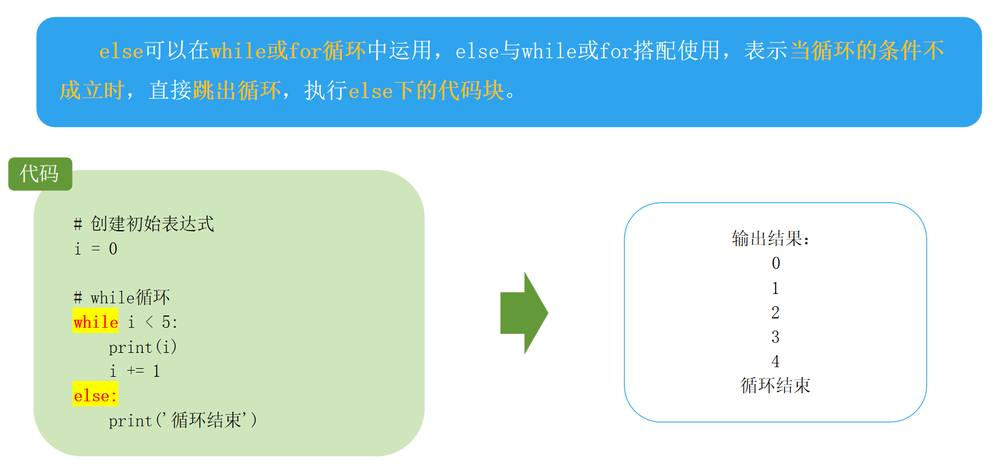
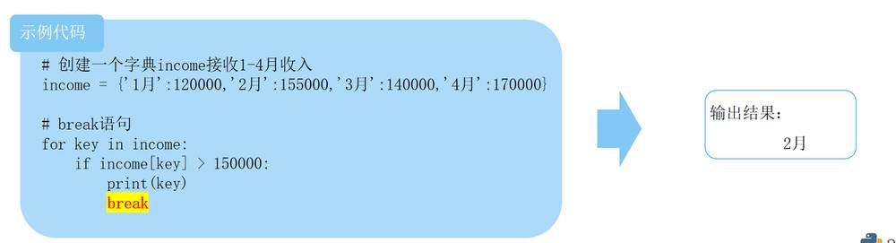

第 1 页 · 4.3 循环结构
4.3 循环结构
while循环一般用于循环次数难以提前确定的情况，也可以用于循环次数确定的情况。
for循环一般用于循环次数可以提前确定的情况，尤其是用于枚举序列或可迭代对象中的元素。
相同或不同的循环结构之间都可以互相嵌套，实现更为复杂的逻辑。
第 2 页 · 4.3.1 while循环
4.3.1 while循环
while循环语法(三个要素)：
i = 0 # 初始化表达式：通过初始化表达式初始化一个变量 while i < 5: # 条件表达式：用来设置循环执行的条件
print(i)
i += 1 # 更新表达式：修改初始化变量的值
while 循环：只要条件满足就不断循环，条件不满足时退出循环。环。
第 3 页 · 4.3.2 for循环
4.3.2 for循环
for循环：通过遍历序列的每一个元素来实现循环。
for循环语法：
for 临时变量 in 可迭代对象：
循环满足条件时执行的代码
第 4 页 · 4.3.3 else与for、while循环联用
4.3.3 else与for、while循环联用

第 5 页 · 4.3.4 break和continue语句
4.3.4 break和continue语句
说明：甲公司1-4月收入分别为12万元、15.5万元、14万元、17万元。
要求：使用for循环与break语句筛选出收入额在15万元以上的第一个月份。
